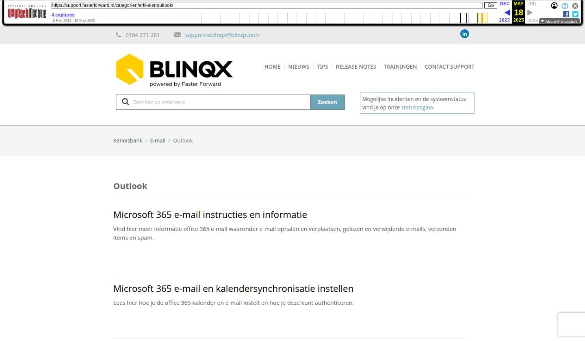

Betalingsherinnering versturen

Tekstinhoud
Betalingsherinnering versturen
Vanuit eBlinqx is het mogelijk om facturen naar de klant te versturen. Het kan voorkomen dat de klant de factuur niet tijdig betaald. Je wilt dan betalingsherinneringen versturen. Dit kan via het dossier of via het facturenoverzicht.
Betalingsherinnering versturen vanuit dossier
Betalingsherinnering tussenpersoonincasso dossier
Betalingsherinnering versturen vanuit facturenoverzicht
Geen tussenpersoonincasso klant (maatschappij incasso)
Betalingsherinnering tussenpersoonsincasso facturenoverzicht
Betalingsherinneringen versturen vanuit de betalingsherinneringmodule
Betalingsherinnering versturen vanuit dossier
In het dossier kan je de facturen terugvinden onder het tabblad Financieel. Hier kan je de status van de factuur terugvinden en hoe lang deze openstaat.
Via de paarse workflowpijl kan je de betalingsherinnering versturen. De opties die zichtbaar worden zijn afhankelijk van de betalingsherinneringsworkflow die bij jou staat ingericht.
Onderstaand is een voorbeeld van een factuur wat niet een tussenpersoonsincasso betreft:
De vervolgstappen zijn afhankelijk van de keuze die je maakt. Kies je voor een keuze per e-mail dan zal er een concept e-mail klaargezet worden onder het tabblad Communicatie – E-mail. Let op: als je voor de optie e-mail kiest, maar er staat geen e-mailadres onder de persoon of organisatie in het dossier dan zal de concept e-mail niet worden klaargezet. Indien het een brief betreft dan komt deze klaar te staan onder het tabblad Communicatie – Brief. Deze kan je uitprinten en per post naar de klant versturen. Daarnaast wordt de status van de factuur aangepast.
Betalingsherinnering tussenpersoonincasso dossier
Nadat de factuur is goedgekeurd en verzonden gaat er een timer lopen die bepaald wanneer de status van de factuur wordt aangepast naar bijvoorbeeld ‘versturen 1e herinnering mail’ Indien deze timer nog niet is afgegaan, krijg je in de herinneringsworkflow de volgende mogelijkheden:
Als de timer wel is afgegaan en de status is aangepast dan krijg je de volgende mogelijkheden in de workflow. In dit geval betreft het een factuur die per e-mail wordt verstuurd:
Wanneer je kiest voor ‘Mail 1e herinnering’ dan zal de e-mail als concept worden klaargezet onder het tabblad Communicatie – E-mail. Let op: om een concept e-mail klaar te kunnen zetten moet er wel een e-mailadres onder de persoon of organisatie aanwezig zijn.
Betalingsherinnering versturen vanuit facturenoverzicht
Ook is het mogelijk om vanuit het facturenoverzicht herinneringen te versturen. Het facturenoverzicht vind je terug onder Financieel – Facturatie – Facturenoverzicht. Ook vanuit hier zit er een verschil tussen facturen met of zonder tussenpersoonsincasso.
Geen tussenpersoonincasso klant (maatschappij incasso)
Binnen het facturenoverzicht kan je filteren op statussen. Indien het geen tussenpersoonsincasso betreft kan je de facturen met bijvoorbeeld de status ‘Verzonden’ opzoeken om vervolgens via de paarse workflowpijl de gewenste actie door te klikken. Het is niet mogelijk om via de knop ‘Acties’ in een bulk betalingsherinneringen te versturen.
Betalingsherinnering tussenpersoonsincasso facturenoverzicht
Zoals eerder aangegeven wordt de status van tussenpersoonincassofactuur aan de hand een timer aangepast naar bijvoorbeeld ‘versturen 1e herinnering mail’. Binnen het facturenoverzicht kan je op deze status filteren.
Vervolgens selecteer je de checkboxen voor de facturen die je wilt versturen. Dan klik je op de blauwe knop Acties om de gewenste actie te kiezen.
Aan de hand van de actie die je kiest worden er vervolgacties verricht. Als je bijvoorbeeld kiest voor ’05 TP incasso: Geselecteerde facturen 1e herinnering versturen’ dan komt de status van de factuur te staan op ‘1e herinnering verzonden’ en de factuur wordt per e-mail verstuurd naar de klant indien in de productkaart ‘Factuur verzendwijze’ staat op ‘E-mail’ (let op: deze komt niet als concept te staan). Als in de productkaart ‘Factuur verzendwijze’ op ‘Post’ staat dan wordt ook de status aangepast en daarnaast wordt in het dossier (onder het tabblad Communicatie – Brief) een brief klaargezet. Ook komt deze brief onder de factuur te staan in het facturenoverzicht. Via de actie ‘Selectie printen’ kan je de facturen uitprinten. De bijbehorende brief kan je via het printericoon afdrukken.
Op deze manier is het mogelijk om een hele batch aan facturen tegelijk te verzenden per e-mail of om te zetten naar pdf om deze uit te printen. De printopdrachten vind je in het facturenoverzicht terug onder het tabblad Printopdrachten.
Betalingsherinneringen versturen vanuit de betalingsherinneringmodule
Betalingsherinneringen kunnen ook verstuurd worden vanuit de betalingsherinneringmodule. Het is niet wenselijk om zowel de workflow als de betalingsherinneringenmodule tegelijkertijd te gebruiken. Hierin zal een keus gemaakt moeten worden. Bespreek dit met een consultant van eBlinqx.
Laatste update: 15 oktober 2025
Was deze informatie nuttig?
Ja Nee